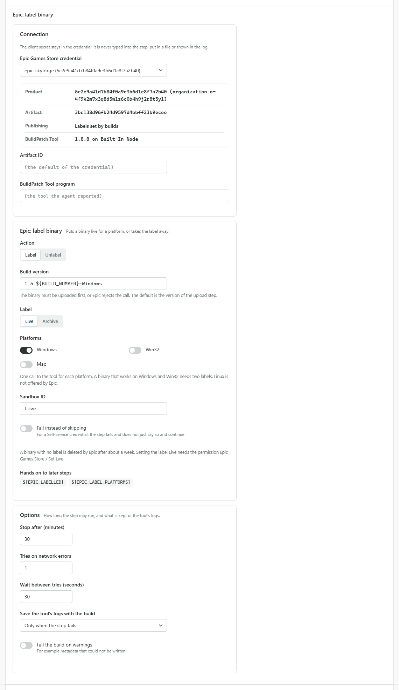

Epic: label binary
Put an uploaded binary live for Windows, Win32 or Mac, or take its label away.
When to use it
Use it after the upload, when the build should reach players. A label tells Epic which binary is Live or Archive for a platform. Epic deletes a binary with no label after about a week.
Setting the label Live needs the permission Epic Games Store / Set Live for the person who started the build.
If the credential is set to Self-service, Epic gives the Live label itself when you assign a platform in the Developer Portal. This step then does nothing and never starts BuildPatch Tool. The form shows a note at the top. See Epic Games Store credential.
Every Epic step runs the Epic BuildPatch Tool on the agent. The agent needs the tool: see Install BuildPatch Tool. A step that needs a newer tool than the agent has stops with a message that names the version the agent has.
How to set it up
- Open the build configuration, then Settings › Build steps › Add build step.
- Type
Epicin Filter step types and click Epic: label binary. - Pick the credential.
- Choose the Action and the Label, and tick the platforms.
- Keep the Build version as the version of the upload step, or type another.
- Click Save.

Every field
Connection
| Field | What it does | Default | Example |
|---|---|---|---|
| Epic Games Store credential | The credential that holds your BuildPatch Tool keys. The list shows the credentials you may use. The secret is never typed in the step, never written to a file and never shown in the log. | None. The step fails if you pick nothing. | Epic Store (Skyforge) |
| Artifact ID | The Epic artifact to work on. Leave it empty to use the Default artifact ID of the credential. | Empty (the credential default) | 0f2b8a6c9d1e4c37a5e8b1d6c2f94a70 |
| BuildPatch Tool program | The full path of the BuildPatch Tool program on the agent. Leave it empty to use the tool the agent reported. | Empty (the tool the agent reported) | D:/Tools/BuildPatchTool/BuildPatchTool.exe |
Epic: label binary
| Field | What it does | Default | Example |
|---|---|---|---|
| Action | Label puts the label on. Unlabel takes it away. | Label | Label |
| Build version | The binary to label. It must be uploaded first, or Epic rejects the call. | ${EPIC_BUILD_VERSION} (the version of the upload step) | 1.4.57-Windows |
| Label | Live or Archive. | Live | Live |
| Platforms | Tick Windows, Win32 and Mac. The step makes one call to the tool for each platform. A binary that works on Windows and Win32 needs two labels. Epic offers no Linux label. At least one must be ticked. | Windows ticked | Windows |
| Sandbox ID | The sandbox to label in. | Empty: the sandbox of the credential, else the public sandbox | a1b2c3... |
| Fail instead of skipping | For a Self-service credential: the step fails, and does not just say so and continue. | Off | Off |
Options
| Field | What it does | Default | Example |
|---|---|---|---|
| Stop after (minutes) | The step is stopped after this time. | 30 | 30 |
| Tries on network errors | How many times the step runs BuildPatch Tool when it fails because of a network problem. A wrong key or a missing permission is never tried again. | 1 | 3 |
| Wait between tries (seconds) | The pause between two tries. | 30 | 60 |
| Save the tool’s logs with the build | Whether the logs BuildPatch Tool wrote on the agent are kept as build artifacts in epic-logs. Choices: Only when the step fails, Always, Never. | Only when the step fails | Always |
| Fail the build on warnings | Fails the step when BuildPatch Tool gave warnings, for example when metadata could not be written. Without it, warnings only show in the log. | Off | On |
Hands on to later steps
| Name | What it holds |
|---|---|
EPIC_LABELLED | true after a label, false after an unlabel or a skip. |
EPIC_LABEL_PLATFORMS | The platforms that were labelled, separated by commas. Empty when skipped. |
A worked example
After Epic Games Store upload and Epic: optimise patch, add Epic: label binary: Action Label, Label Live, Platforms Windows, Build version left as ${EPIC_BUILD_VERSION}. To retire the old build, add a second step with Action Unlabel, Label Live and Build version 1.3.2-Windows.
What you see when it runs
Epic: credential Epic Store (Skyforge), product 8c1d5f, artifact 0f2b8a..., Publishing: Labels set by builds Epic: label Live for Windows, version 1.4.57-Windows Epic: Step output EPIC_LABELLED = true Epic: Step output EPIC_LABEL_PLATFORMS = Windows
With a Self-service credential you see instead: Epic: credential ... is set to Self-service. BuildPatch Tool was not started. and a line that tells you to assign the platform in the Developer Portal.
Problems and fixes
| Message | What to do |
|---|---|
| You may not set a binary live | Ask an administrator for Epic Games Store / Set Live. |
| Tick at least one platform | Tick Windows, Win32 or Mac. |
| Epic refused the label | If your organization uses self-service publishing, set Publishing to Self-service on the credential, and assign the platform in the Developer Portal: Artifacts and Binaries, your artifact, the menu on an active binary, Manage Platforms. |
| The credential is set to Self-service: labels are set in the Developer Portal | You ticked Fail instead of skipping. Untick it, or use a credential set to Labels set by builds. |
Related pages
- Epic Games Store upload
- Epic: optimise patch
- Epic Games Store credential: Publishing and permissions.
- Publish a build to the Epic Games Store